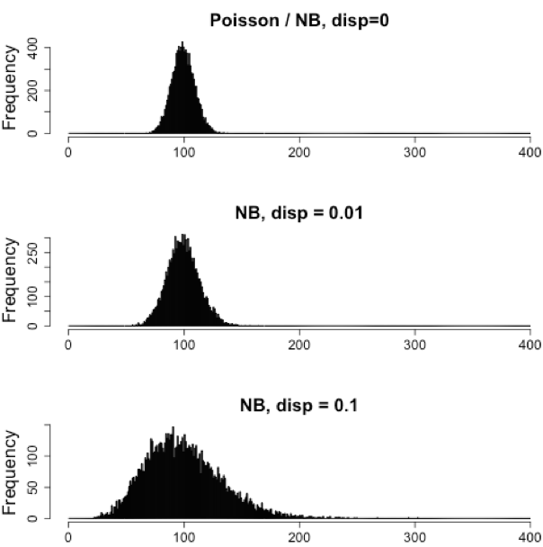

NOTE:
To make names more generalized for the next course, /data/Bspc-training/shared/rnaseq_jan2025 is now /data/Bspc-training/shared/rnaseq_mov10 . Make sure to edit any scripts that refer to the shared data!
Approximate time: 60 minutes
Week 6 Slides on DEseq2 workflow
Learning Objectives
- Explain the experiment and its objectives
- Describe how to set up an RNA-seq project in R
- Describe the RNA-seq and the differential gene expression analysis workflow
- Explain why negative binomial distribution is used to model RNA-seq count data
Differential gene expression (DGE) analysis overview
The goal of RNA-seq is often to perform differential expression testing to determine which genes are expressed at different levels between conditions. These genes can offer biological insight into the processes affected by the condition(s) of interest.
To determine the expression levels of genes, our RNA-seq workflow followed the steps detailed in the image below. All steps were performed on the command line (Linux/Unix) through the generation of the read counts per gene. The differential expression analysis and any downstream functional analysis are generally performed in R using R packages specifically designed for the complex statistical analyses required to determine whether genes are differentially expressed.

In the next few lessons, we will walk you through an end-to-end gene-level RNA-seq differential expression workflow using various R packages. We will start with the count matrix, perform exploratory data analysis for quality assessment and to explore the relationship between samples, perform differential expression analysis, and visually explore the results prior to performing downstream functional analysis.
Review of the dataset
We will be using the full count matrix from the RNA-Seq dataset that is part of a larger study described in Kenny PJ et al, Cell Rep 2014.
The RNA-Seq was performed on HEK293F cells that were either transfected with a MOV10 transgene, or siRNA to knock down Mov10 expression, or non-specific (irrelevant) siRNA. This resulted in 3 conditions Mov10 oe (over expression), Mov10 kd (knock down) and Irrelevant kd, respectively. The number of replicates is as shown below.
Using these data, we will evaluate transcriptional patterns associated with perturbation of MOV10 expression. Please note that the irrelevant siRNA will be treated as our control condition.

What is the purpose of these datasets? What does Mov10 do?
The authors are investigating interactions between various genes involved in Fragile X syndrome, a disease in which there is aberrant production of the FMRP protein.
FMRP is “most commonly found in the brain, is essential for normal cognitive development and female reproductive function. Mutations of this gene can lead to fragile X syndrome, mental retardation, premature ovarian failure, autism, Parkinson’s disease, developmental delays and other cognitive deficits.” - from wikipedia
MOV10, is a putative RNA helicase that is also associated with FMRP in the context of the microRNA pathway.
The hypothesis the paper is testing is that FMRP and MOV10 associate with and participate in miRNA-mediated regulation of the translation of a subset of RNAs. One part of the study identified mRNAs bound to MOV10; the RNA-seq part we are working with here explores the effect of knockdown or overexpression of MOV10 on steady-state mRNA as a result of this miRNA-mediated regulation.

Our questions:
- What patterns of expression can we identify with the loss or gain of MOV10?
- Are there any genes shared between the two conditions?
Setting up
Opening the project using RStudio (HPC on Demand)
Before we get into the details of the analysis, let’s start by:
-
Opening up RStudio using HPC on Demand, using default values except for Starting Directory:
/data/Bspc-training/YOUR_USERNAME/rnaseq -
To check whether or not you are in the correct working directory, use
getwd(). Something like/vf/users/Bspc-training/changes/rnaseqshould come up. -
Using the Project menu in the top right corner, or the Files Pane window (clicking rnaseq -> DEanalysis), to navigate to and open
DEanalysis.Rproj, which you set up as an Assignment last week. -
Go to the
Filemenu and selectNew File, then selectR Script. This should open up a script editor in the top left hand corner. This is where we will be typing and saving all commands required for this analysis. In the script editor type in header lines:
# Gene-level differential expression analysis using DESeq2
- Now save the file as
de_script.R.
Loading and Installing libraries
For this analysis we will be using several R packages, some which have been installed from CRAN and others from Bioconductor. To use these packages (and the functions contained within them), we need to load the libraries. Add the following to your script and don’t forget to comment liberally!
It’s good practice to load all needed libraries at the top of your script. Often, you don’t know ahead of time which you may need, so as you develop code you’ll often incrementally add more libraries to the top of the script.
Note that these package names are all case sensitive, and you can load packages interactively in the Packages tab of our Files Pane window. However, it is best practice to have your code load the libraries so that it is clearly documented.
# Setup
# Bioconductor and CRAN libraries used - already installed on Biowulf
library(tidyverse)
library(RColorBrewer)
library(DESeq2)
library(pheatmap)
There is one package we need, DEGreport, that is likely not installed for you here. To install it, load BiocManager (part of BioConductor), then run BiocManager’s install() function for the only package not already installed by default in our interactive RStudio session:
# You don't need to add this to your script.
# It only needs to be done once.
library(BiocManager)
install("DEGreport")
On Biowulf, this installs to your user data directory, specifically in /data/$USER/rhel8/$R_VERSION, which you can find by running find.package("DEGreport"). Once it is installed there (and for this version of R that you’re using, currently 4.4), you don’t need to do this again.
Then, add this line in your script to load the package we just installed:
library(DEGreport)
Loading data
To load the data into our current environment, we will be using the read.table function. We need to provide the path to each file and also specify arguments to let R know that we have a header (header = T) and the first column is our row names (row.names=1). By default, the function expects tab-delimited files, which is what we have.
We will load in the featureCounts matrix and the metadata table into data frames (technically, R data.frame objects but we’ll call them data frames here).
# Load in data
data <- read.table("data/mov10_AllSamples_featurecounts.Rmatrix.txt", header=T, row.names=1)
meta <- read.table("data/mov10_AllSamples_metadata.txt", header=T, row.names=1)
Use class() to inspect our data and make sure we are working with data frames:
# Check classes of the data we just brought in
class(meta)
class(data)
Exercise: What are some other commands we can do to make sure meta and data are the expected structure and dimensions?
Viewing data
Make sure your datasets contain the expected samples / information before proceeding to perfom any type of analysis.
View(meta)
View(data)
Note: if you’re using command-line R, View won’t work because it’s graphical. Instead, use head, str, or glimpse.
Differential gene expression analysis overview
So what does this count data actually represent? The count data used for differential expression analysis represents the number of sequence reads that originated from a particular gene. The higher the number of counts, the more reads associated with that gene, and the assumption that there was a higher level of expression of that gene in the sample compared to other samples.

With differential expression analysis, we are looking for genes that change in expression between two or more groups (defined in the metadata) - case vs. control - or correlation of expression with some variable or clinical outcome
Why does it not work to identify differentially expressed genes simply by ranking the genes by how different they are between the two groups (based on fold change values)?

More often than not, there is much more going on with your data than what you are anticipating. Genes that vary in expression level between samples is a consequence of not only the experimental variables of interest but also due to extraneous sources. The goal of differential expression analysis to determine the relative role of these effects, and to separate the “interesting” from the “uninteresting”.

The “uninteresting” presents as sources of variation in your data, and so even though the mean expression levels between sample groups may appear to be quite different, it is possible that the difference is not actually significant. This is illustrated for ‘GeneA’ expression between ‘untreated’ and ‘treated’ groups in the figure below. The mean expression level of geneA for the ‘treated’ group is twice as large as for the ‘untreated’ group, but the variation between replicates indicates that this may not be a significant difference. We need to take into account the variation in the data (and where it might be coming from) when determining whether genes are differentially expressed.

The goal of differential expression analysis is to determine, for each gene, whether the differences in expression (counts) between groups is significant given the amount of variation observed within groups (replicates). To test for significance, we need an appropriate statistical model that accurately performs normalization (to account for differences in sequencing depth, etc.) and variance modeling (to account for few numbers of replicates and large dynamic expression range).
RNA-seq count distribution
To determine the appropriate statistical model, we need information about the distribution of counts. To get an idea about how RNA-seq counts are distributed, let’s plot the counts for a single sample, ‘Mov10_oe_1’. To do so, we are going to be using a REALLY useful visualization package called ggplot2 (see landing page for ggplot2).
Discussion: Although we aren’t going to talk about ggplot commands in depth in this course, you can probably figure out what some parts of this command are doing. What is x = Mov10_oe_1 doing? What about xlab and ylab?
ggplot(data) +
geom_histogram(aes(x = Mov10_oe_1), stat = "bin", bins = 200) +
xlab("Raw expression counts") +
ylab("Number of genes")

If we zoom in close to zero, we can see a large number of genes with counts of zero:
ggplot(data) +
geom_histogram(aes(x = Mov10_oe_1), stat = "bin", bins = 200) +
xlim(-5, 500) +
xlab("Raw expression counts") +
ylab("Number of genes")

These images illustrate some common features of RNA-seq count data, including a low number of counts associated with a large proportion of genes, and a long right tail due to the lack of any upper limit for expression. Unlike microarray data, which has a dynamic range maximum limited due to when the probes max out, there is no limit of maximum expression for RNA-seq data. Due to the differences in these technologies, the statistical models used to fit the data are different between the two methods.
NOTE: The log intensities of the microarray data approximate a normal distribution. However, due to the different properties of the of RNA-seq count data, such as integer counts instead of continuous measurements and non-normally distributed data, the normal distribution does not accurately model RNA-seq counts [1].
Modeling count data
Count data is often modeled using the binomial distribution, which can give you the probability of getting a number of heads upon tossing a coin a number of times. However, not all count data can be fit with the binomial distribution. The binomial is based on discrete events and used in situations when you have a certain number of cases.
When the number of cases is very large (i.e. people who buy lottery tickets), but the probability of an event is very small (probability of winning), the Poisson distribution is used to model these types of count data. The Poisson is similar to the binomial, but where the binomial is restricted to a number of trials, the Poisson is used when any number of trials can occur. Details provided by Rafael Irizarry in the EdX class.
With RNA-Seq data, a very large number of RNAs are represented and the probability of pulling out a particular transcript is very small. Thus, it would be an appropriate situation to use the Poisson distribution. However, a unique property of the Poisson distribution is that the mean == variance. Realistically, with RNA-Seq data there is always some biological variation present across the replicates (within a sample class). Genes with larger average expression levels will tend to have larger observed variances across replicates.
If the proportions of mRNA stayed exactly constant between the biological replicates for each sample class, we could expect Poisson distribution (where mean == variance). A nice description of this concept is presented by Rafael Irizarry in the EdX class. But when we look at actual RNA-seq counts, this doesn’t happen. In fact, we see more variance than we would expect if RNA-seq counts truly followed a Poisson distribution.
It turns out that the distribution that that fits best, given this type of variability between replicates, is the Negative Binomial (NB) distribution. Essentially, the NB model is a good approximation for data where the mean < variance, as is the case with RNA-Seq count data.
Technically, a Poisson is the same as a NB with zero dispersion. As you increase the dispersion parameter for an NB, it describes an increasingly variable distribution. A big part of differential expression involves figuring out what dispersion parameter to use for a gene so that we can get this underlying distribution.

NOTE:
- Biological replicates represent multiple samples (i.e. RNA from different mice) representing the same sample class
- Technical replicates represent the same sample (i.e. RNA from the same mouse) but with technical steps replicated
- Usually biological variance is much greater than technical variance, so we do not need to account for technical variance to identify biological differences in expression
- Don’t spend money on technical replicates - biological replicates are much more useful
NOTE: If you are using cell lines and are unsure whether or not you have prepared biological or technical replicates, take a look at this link. This is a useful resource in helping you determine how best to set up your in-vitro experiment.
How do I know if my data should be modeled using the Poisson distribution or Negative Binomial distribution?
If it is count data, it should fit the negative binomial, as discussed previously. However, it can be helpful to plot the mean versus the variance of your data. Remember for the Poisson model, mean = variance, but for NB, mean < variance.
Run the following code to plot the mean versus variance for the ‘Mov10 overexpression’ replicates:
mean_counts <- apply(data[, 6:8], 1, mean)
variance_counts <- apply(data[, 6:8], 1, var)
df <- data.frame(mean_counts, variance_counts)
ggplot(df) +
geom_point(aes(x=mean_counts, y=variance_counts)) +
geom_abline(slope=1, intercept=0, color='red') +
scale_y_log10() +
scale_x_log10()
DISCUSSION: why
6:8in the above code?

Note that in the above figure, the variance across replicates tends to be greater than the mean (red line), especially for genes with large mean expression levels. This is a good indication that our data do not fit the Poisson distribution and we need to account for this increase in variance using the Negative Binomial model (i.e. Poisson will underestimate variability leading to an increase in false positive DE genes).
Improving mean estimates (i.e. reducing variance) with biological replicates
The variance tends to reduce as we increase the number of biological replicates (the distribution will approach the Poisson distribution with increasing numbers of replicates), since standard deviations of averages are smaller than standard deviations of individual observations. The value of additional replicates is that as you add more data (replicates), you get increasingly precise estimates of group means, and ultimately greater confidence in the ability to distinguish differences between sample classes (i.e. more DE genes).
The figure below illustrates the relationship between sequencing depth and number of replicates on the number of differentially expressed genes identified [1]. Note that an increase in the number of replicates tends to return more DE genes than increasing the sequencing depth. Therefore, generally more replicates are better than higher sequencing depth, with the caveat that higher depth is required for detection of lowly expressed DE genes and for performing isoform-level differential expression. Generally, the minimum sequencing depth recommended is 20-30 million reads per sample, but we have seen good RNA-seq experiments with 10 million reads if there are a good number of replicates.

Differential expression analysis workflow
To model counts appropriately when performing a differential expression analysis, there are a number of software packages that have been developed for differential expression analysis of RNA-seq data. Even as new methods are continuously being developed a few tools are generally recommended as best practice, e.g. DESeq2 and EdgeR. Both these tools use the negative binomial model, employ similar methods, and typically, yield similar results. They are pretty stringent, and have a good balance between sensitivity and specificity (reducing both false positives and false negatives).
Limma-Voom is another set of tools often used together for DE analysis, but this method may be less sensitive for small sample sizes. This method is recommended when the number of biological replicates per group grows large (> 20).
Many studies describing comparisons between these methods show that while there is some agreement, there is also much variability between tools. Additionally, there is no one method that performs optimally under all conditions (Soneson and Dleorenzi, 2013).
This multi-way Venn diagram shows that the four methods assessed do have substantially overlapping differential expression calls, but some methods disagree. This is also using the original DESeq algorithm (as opposed to the DESeq2 version we’ll be using), but it gives a good flavor of the variability across methods.
DISCUSSION: Which one is correct? How can we tell?

We will be using DESeq2 for the DE analysis, and the analysis steps with DESeq2 are shown in the flowchart below in blue. DESeq2 first normalizes the count data to account for differences in library sizes and RNA composition between samples. Then, we will use the normalized counts to make some plots for QC at the gene and sample level. The final step is to use the appropriate functions from the DESeq2 package to perform the differential expression analysis.

We will go in-depth into each of these steps in the following lessons, but additional details and helpful suggestions regarding DESeq2 can be found in the DESeq2 vignette. As you go through this workflow and questions arise, you can reference the vignette from within RStudio:
vignette("DESeq2")
This is very convenient, as it provides a wealth of information at your fingertips! Be sure to use this as you need during the workshop.
Assignment
Create another R script (also saved to this DEanalysis directory) where you modify the three plots we made for the Mov10_oe_1 samples to look a the count distribution for the sample Irrel_kd_3. Save these images to figures/ as PNG files.
This lesson has been developed by members of the teaching team at the Harvard Chan Bioinformatics Core (HBC). These are open access materials distributed under the terms of the Creative Commons Attribution license (CC BY 4.0), which permits unrestricted use, distribution, and reproduction in any medium, provided the original author and source are credited.